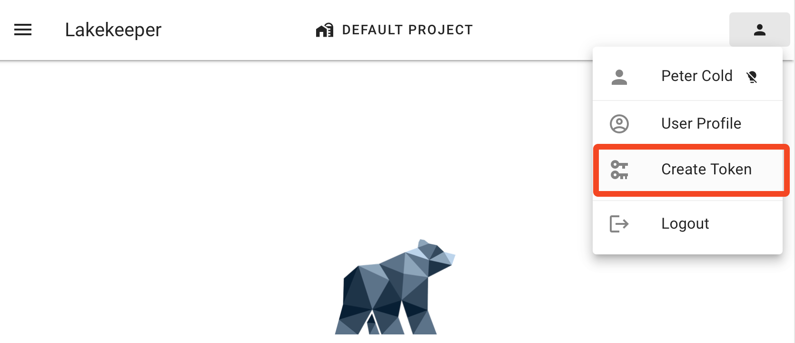
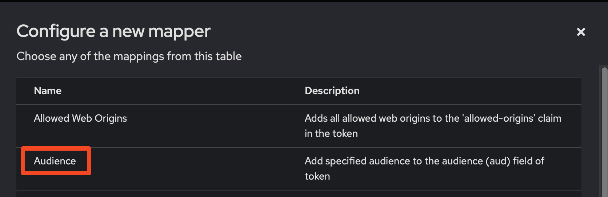
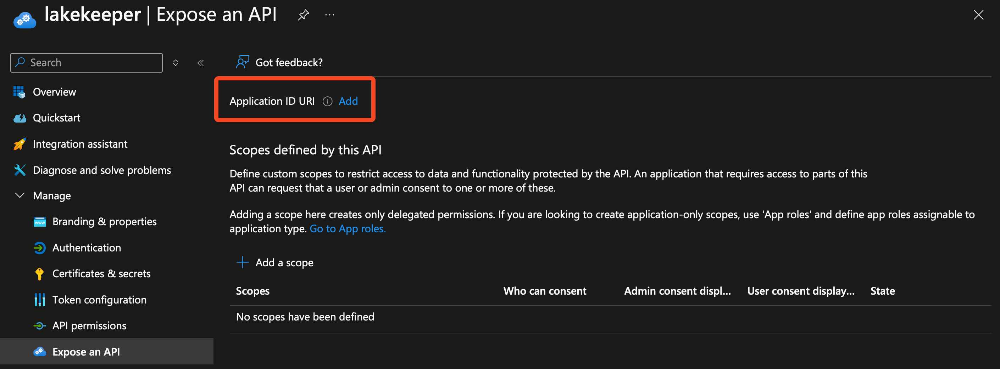

Authentication¶
Authentication is crucial for securing access to Lakekeeper. By enabling authentication, you ensure that only authorized users can access and interact with your data. Lakekeeper supports authentication via any OpenID (or OAuth 2) capable identity provider as well as authentication for Kubernetes service accounts, allowing you to integrate with your existing identity providers.
Authentication and Authorization are distinct processes in Lakekeeper. Authentication verifies the identity of users, ensuring that only authorized individuals can access the system. This is performed via an Identity Provider (IdP) such as OpenID or Kubernetes. Authorization, on the other hand, determines what authenticated users are allowed to do within the system. Lakekeeper is extendable and can connect to different authorization systems. By default, Lakekeeper uses OpenFGA to manage and evaluate permissions, providing a robust and flexible authorization model. For more details, see the Authorization guide.
Lakekeeper does not issue API-Keys or Client-Credentials itself. Instead, it relies on external IdPs for authentication, ensuring a secure and centralized management of user identities. This approach minimizes the risk of credential leakage and simplifies the integration with existing security infrastructures.
OpenID Provider¶
Lakekeeper can be configured to integrate with all common identity providers. For best performance, tokens are validated locally against the server keys (jwks_uri). This requires all incoming tokens to be JWT tokens. If you require support for opaque tokens, please upvote the corresponding GitHub Issue.
If LAKEKEEPER__OPENID_PROVIDER_URI is specified, Lakekeeper will verify access tokens against this provider. The provider must provide the .well-known/openid-configuration endpoint and the openid-configuration needs to have jwks_uri and issuer defined. Optionally, if LAKEKEEPER__OPENID_AUDIENCE is specified, Lakekeeper validates the aud field of the provided token to match the specified value. We recommend to specify the audience in all deployments, so that tokens leaked for other applications in the same IdP cannot be used to access data in Lakekeeper.
Users are automatically added to Lakekeeper after successful Authentication (user provides a valid token with the correct issuer and audience). If a User does not yet exist in Lakekeeper's Database, the provided JWT token is parsed. The following fields are parsed:
name:nameorgiven_name/first_nameandfamily_name/last_nameorapp_displaynameorpreferred_usernamesubject:subunlesssubject_claimis set, then it will be the value of the claim.claims: all claimsemail:emailorupnif it contains an@orpreferred_usernameif it contains an@
If the name cannot be determined because none of the claims are available, the principal is registered under the name Nameless App with ID <user-id>.
Lakekeeper determines the ID of users in the following order:
- If
LAKEKEEPER__OPENID_SUBJECT_CLAIMis set, this value (or comma-separated list of values) is tried in order and the first claim present in the token is used. Setting only one claim, that claim must be present. - If
oidis present, it is used. The main motivation to prefer theoidover thesubis that thesubfield is not unique across applications, while theoidis. (See for example Entra-ID). Lakekeeper needs to the same IDs as query engines in order to share Permissions. - If the
subfield is present, use it, otherwise fail.
IDs from the OIDC provider in Lakekeeper have the form oidc~<ID from the provider>.
Authenticating Machine Users¶
All common iceberg clients and IdPs support the OAuth2 Client-Credential flow. The Client-Credential flow requires a Client-ID and Client-Secret that is provided in a secure way to the client. In the following sections we demonstrate for selected IdPs how applications can be setup for machine users to connect.
Authenticating Humans¶
Human Authentication flows are interactive by nature and are typically performed directly by the IdP. This enables the use of all security options that the IdP supports, including 2FA, hardware keys, single-sign-on and more. The recommended flows for authentication are Authorization Code Flow RFC6749#section-4.1 with PKCE and Device Code Flow RFC8628.
At the time of writing all common iceberg clients (spark, trino, starrocks, pyiceberg, ...) do not support any authorization flow that is suitable for human users natively. The iceberg community is working on introducing those flows and we started an initiative to standardize and document them as part of the iceberg docs.
Until iceberg clients are natively ready for human flows, authentication flows have to be performed outside of iceberg clients. To make this process as easy as possible, the Lakekeeper UI offers the option to get a new token for a human user:

The lifetime of this token is specified in the corresponding application in your IdP. We recommend to set the lifetime to no longer than one day.
Keycloak¶
We are creating two Client: The first client with a "public" profile for the Lakekeeper API & UI and the second client for a machine client (e.g. Spark). Repeat step 2 for each machine client that is needed.
Client 1: Lakekeeper¶
- Create a new "Client":
- Client Type: choose "OpenID Connect"
- Client ID: choose any, for this example we choose
lakekeeper - Name: choose any, for this example we choose
Lakekeeper Catalog - Client authentication: Leave "Off". We need a public client.
- Authentication Flows: Enable "Standard flow", OAuth 2.0 Device Authorization Grant".
- Valid redirect URIs: For testing a wildcard "*" can be set. Otherwise the URL where the Lakekeeper UI is reachable for the user suffixed by
/callback. E.g.:http://localhost:8181/ui/callback.
- When the client is created, click on the "Advanced" tab of this client, scroll down to "Advanced settings" and set "Access Token Lifespan" to "Expires in" - 12 Hours.
- Create a new "Client scope" in the left side menu:
- Name: choose any, for this example we choose
lakekeeper - Description:
Client of Lakekeeper - Type: Optional
- Name: choose any, for this example we choose
- When the scope is created, we need to add a new mapper. This is recommended because Lakekeeper can validate the
audience(target service) of the token for increased security. In order to add thelakekeeperaudience to the token every time thelakekeeperscope is requested, we create a new mapper. Select the "Mappers" tab of the previously createdlakekeeperscope. Select "Configure a new mapper" -> "Audience".
- Name: choose any, for this example we choose
Add lakekeeper Audience - Included Client Audience: Select the id of the previously created App 1. In our example this is
lakekeeper. - Make sure
Add to access tokenandAdd to token introspectionis enabled.
- Name: choose any, for this example we choose
- Finally, we need to grant the
sparkclient permission to use thelakekeeperscope which adds the correct audience to the issued token. Select the "Client scopes" tab of thelakekeeperclient and select "Add client scope". Select the previously created scope, in our example this islakekeeper. We recommend adding the scope as "Default".
We are now ready to deploy Lakekeeper and login via the UI. Set the following environment variables / configurations:
LAKEKEEPER__OPENID_PROVIDER_URI=http://localhost:30080/realms/iceberg (URI of the keycloak realm)
LAKEKEEPER__OPENID_AUDIENCE=lakekeeper (ID of Client 1)
LAKEKEEPER__UI__OPENID_CLIENT_ID="lakekeeper" (ID of Client 1)
# LAKEKEEPER__UI__OPENID_SCOPE="lakekeeper" (Name of the created scope, not required if scope was added as default)
Client 2: Machine User¶
Repeat this process for each query engine / machine user that is required:
- Create a new "Client":
- Client Type: choose "OpenID Connect"
- Client ID: choose any, for this example we choose
spark. - Name: choose any, for this example we choose
Spark Client accessing Lakekeeper - Client authentication: Turn "On". Leave "Authorization" turned "Off".
- Authentication Flows: Enable "Service accounts roles" and "Standard Token Exchange".
- When the client is created, click on "Credentials", choose "Client Authenticator" as "Client Id and Secret". Copy the
Client Secretfor later use. - Finally, we need to grant the
sparkclient permission to use thelakekeeperscope which adds the correct audience to the issued token. Select the "Client scopes" tab of thesparkclient and select "Add client scope". Select the previously created scope, in our example this islakekeeper. We recommend adding the scope as "Optional". By adding an optional scope the client can be re-used for other services, i.e. if Spark needs to access another catalog in the future.
That's it! We can now use the second App Registration to sign into Lakekeeper using Spark or other query engines. A Spark configuration would look like:
import pyiceberg.catalog
import pyiceberg.catalog.rest
import pyiceberg.typedef
catalog = pyiceberg.catalog.rest.RestCatalog(
name="my_catalog_name",
uri="http://localhost:8181/catalog",
warehouse="<warehouse name>",
credential="<Client-ID of Client 2>:<Client-Secret of Client 2>",
scope="lakekeeper", # Name of the created scope
**{
"oauth2-server-uri": "http://localhost:30080/realms/<keycloak realm name>/protocol/openid-connect/token"
},
)
print(catalog.list_namespaces())
import pyspark
conf = {
"spark.jars.packages": "org.apache.iceberg:iceberg-spark-runtime-3.5_2.12:1.7.0,org.apache.iceberg:iceberg-azure-bundle:1.7.0",
"spark.sql.extensions": "org.apache.iceberg.spark.extensions.IcebergSparkSessionExtensions",
"spark.sql.catalog.lakekeeper": "org.apache.iceberg.spark.SparkCatalog",
"spark.sql.catalog.lakekeeper.type": "rest",
"spark.sql.catalog.lakekeeper.uri": "http://localhost:8181/catalog",
"spark.sql.catalog.lakekeeper.credential": "<Client-ID of Client 2>:<Client-Secret of Client 2>",
"spark.sql.catalog.lakekeeper.warehouse": "<warehouse name>",
"spark.sql.catalog.lakekeeper.scope": "lakekeeper", # Name of the created scope
"spark.sql.catalog.lakekeeper.oauth2-server-uri": "http://localhost:30080/realms/<keycloak realm name>/protocol/openid-connect/token",
}
config = pyspark.SparkConf().setMaster("local")
for k, v in conf.items():
config = config.set(k, v)
spark = pyspark.sql.SparkSession.builder.config(conf=config).getOrCreate()
try:
spark.sql("USE `lakekeeper`")
except Exception as e:
print(e.stackTrace)
raise e
spark.sql("CREATE NAMESPACE IF NOT EXISTS `test`")
spark.sql("CREATE OR REPLACE TABLE `test`.`test_tbl` AS SELECT 1 a")
If Authorization is enabled, the client will throw an error as no permissions have been granted yet. During this initial connect to the /config endpoint of Lakekeeper, the user is automatically provisioned so that it should show up when searching for users in the "Grant" dialog and user search endpoints.
Entra-ID (Azure)¶
We are creating three App-Registrations: The first for Lakekeeper itself, the second for the Lakekeeper UI the third for a machine client (e.g. Spark) to access Lakekeeper. Repeat step 3 for each machine client that is needed. While App-Registrations can also be shared, the recommended setup we propose here offers more flexibility and better security.
App 1: Lakekeeper UI Application¶
- Create a new "App Registration"
- Name: choose any, for this example we choose
Lakekeeper-UI - Redirect URI: Add the URL where the Lakekeeper UI is reachable for the user suffixed by
/callback. E.g.:http://localhost:8181/ui/callback. If asked, select type "Single Page Application (SPA)".
- Name: choose any, for this example we choose
- In the "Overview" page of the "App Registration" note down the
Application (client) ID. Also note theDirectory (tenant) ID. - Finally we recommend to set a policy for tokens to expire in 12 hours instead of the default ~1 hour. Please follow the Microsoft Tutorial to assign a corresponding policy to the Application. (If you find a good way to do this via the UI, please let us know so that we can update this documentation page!)
Alternatively, the following snippets will setup the resources mentioned above:
resource "azuread_application_registration" "lakekeeper_ui" {
display_name = "Lakekeeper UI"
}
resource "azuread_application_redirect_uris" "lakekeeper_ui" {
application_id = azuread_application_registration.lakekeeper_ui.id
type = "SPA"
redirect_uris = [
<insert-redirect-uris>
]
}
resource "azuread_service_principal" "lakekeeper_ui" {
client_id = azuread_application_registration.lakekeeper_ui.client_id
feature_tags {
enterprise = true
}
}
App 2: Lakekeeper Application¶
- Create a new "App Registration"
- Name: choose any, for this example we choose
Lakekeeper - Redirect URI: Leave empty.
- Name: choose any, for this example we choose
- When the App Registration is created, select "Manage" -> "Expose an API" and on the top select "Add" beside
Application ID URI.
Note down theApplication ID URI(should beapi://<Client ID>). - Still in the "Expose an API" menus, select "Add a Scope". Fill the fields as follows:
- Scope name: lakekeeper
- Who can consent? Admins and users
- Admin consent display name: Lakekeeper API
- Admin consent description: Access Lakekeeper API
- State: Enabled
- After the
lakekeeperscope is created, click "Add a client application" under the "Authorized client applications" headline. Select the previously created scope and paste asClient IDthe previously noted ID from App 1. - In the "Overview" page of the "App Registration" note down the
Application (client) ID.
Alternatively, the following snippets will setup the resources mentioned above:
resource "random_uuid" "lakekeeper_scope" {}
resource "azuread_application" "lakekeeper" {
display_name = "Lakekeeper"
owners = [data.azuread_client_config.current.object_id]
api {
mapped_claims_enabled = true
requested_access_token_version = 2
known_client_applications = [
azuread_application_registration.lakekeeper_ui.client_id
]
oauth2_permission_scope {
id = random_uuid.lakekeeper_scope.id
value = "lakekeeper"
enabled = true
type = "User"
admin_consent_description = "Lakekeeper API"
admin_consent_display_name = "Access Lakekeeper API"
user_consent_description = "Lakekeeper API"
user_consent_display_name = "Access Lakekeeper API"
}
}
lifecycle {
ignore_changes = [
identifier_uris,
]
}
}
resource "azuread_application_identifier_uri" "lakekeeper" {
application_id = azuread_application.lakekeeper.id
identifier_uri = "api://${azuread_application.lakekeeper.client_id}"
}
resource "azuread_service_principal" "lakekeeper_client" {
client_id = azuread_application.lakekeeper.client_id
feature_tags {
enterprise = true
}
}
resource "azuread_application_pre_authorized" "lakekeeper" {
application_id = azuread_application.lakekeeper.id
authorized_client_id = azuread_application_registration.lakekeeper_ui.client_id
permission_ids = [
random_uuid.lakekeeper_scope.id
]
}
We are now ready to deploy Lakekeeper and login via the UI. Set the following environment variables / configurations:
// Note the v2.0 at the End of the provider URI!
LAKEKEEPER__OPENID_PROVIDER_URI=https://login.microsoftonline.com/<Tenant ID>/v2.0
LAKEKEEPER__OPENID_AUDIENCE="api://<Client ID from App 2 (lakekeeper)>"
LAKEKEEPER__UI__OPENID_CLIENT_ID="<Client ID from App 1 (lakekeeper-ui)>"
LAKEKEEPER__UI__OPENID_SCOPE="openid profile api://<Client ID from App 2>/lakekeeper"
LAKEKEEPER__OPENID_ADDITIONAL_ISSUERS="https://sts.windows.net/<Tenant ID>/"
Why is OPENID_ADDITIONAL_ISSUERS needed?
Entra ID issues v1 or v2 access tokens depending on the accessTokenAcceptedVersion property in the resource API's app manifest (App 2). The token version determines the iss (issuer) claim in the JWT:
| Token Version | accessTokenAcceptedVersion |
Issuer (iss) claim |
|---|---|---|
| v1 | null (default) or 1 |
https://sts.windows.net/<Tenant ID>/ |
| v2 | 2 |
https://login.microsoftonline.com/<Tenant ID>/v2.0 |
Even when using the v2.0 provider URI, Entra may still issue v1 tokens with the sts.windows.net issuer if accessTokenAcceptedVersion is not explicitly set to 2 in App 2's manifest. This is a common source of authentication failures.
Recommended: Set accessTokenAcceptedVersion to 2 in App 2's manifest (or use requested_access_token_version = 2 in Terraform as shown above). The OPENID_ADDITIONAL_ISSUERS setting is provided as a fallback to accept v1 tokens without changing your app registration.
output "LAKEKEEPER__OPENID_PROVIDER_URI" {
value = "https://login.microsoftonline.com/${azuread_service_principal.lakekeeper.application_tenant_id}/v2.0"
}
output "LAKEKEEPER__OPENID_AUDIENCE" {
value = azuread_application.lakekeeper.client_id
}
output "LAKEKEEPER__UI__OPENID_CLIENT_ID" {
value = azuread_application_registration.lakekeeper_ui.client_id
}
output "LAKEKEEPER__UI__OPENID_SCOPE" {
value = "openid profile api://${azuread_application.lakekeeper.client_id}/lakekeeper"
}
output "LAKEKEEPER__OPENID_ADDITIONAL_ISSUERS" {
value = "https://sts.windows.net/${azuread_service_principal.lakekeeper.application_tenant_id}"
}
Before continuing with App 2, we recommend to create a Warehouse using any of the supported storages. Please check the Storage Documentation for more information. Without a Warehouse, we won't be able to test App 3.
App 3: Machine User¶
Repeat this process for each query engine / machine user that is required:
- Create a new "App Registration"
- Name: choose any, for this example we choose
Spark - Redirect URI: Leave empty - we are going to use the Client Credential Flow
- Name: choose any, for this example we choose
- When the App Registration is created, select "Manage" -> "Certificates & secrets" and create a "New client secret". Note down the secrets "Value".
- There might be an additional step needed before you can utilize the machine user. First, get the token for it using the credentials you created on previous steps:
Note that
curl -X POST -H 'Content-Type: application/x-www-form-urlencoded' \ https://login.microsoftonline.com/{tenant_id}/oauth2/v2.0/token \ -d 'client_id={client_id}' \ -d 'grant_type=client_credentials' \ -d 'scope=email openid {APP2_client_id}%2F.default' \ -d 'client_secret={client_secret}'scopeparameter might not acceptapi://prefix for the APP2 scope for some Entra tenants. In that case, simply useapp2_client_id/.defaultas shown above. Copy theaccess_tokenfrom the response and decode it using jwt.io or any other JWT decode tool. In order for automatic registration to work, token must contain the following claims:app_displayname: name of the APP3 assigned in step 1appid: application identifier (client identifier) of the App 3idtyp: "app" (indicates this is an Entra service principal)
For some Entra installations you might not get any of those claims in the JWT. idtyp can be added via optional claims in the App Registration of the previously created "App 2". Add them to access_token of App 2 and set name to idtyp and essential to true.
Alternatively, the following snippets will setup the resources mentioned above:
resource "azuread_application_registration" "my_lakekeeper_machine_user" {
display_name = "My Lakekeeper Machine User"
}
resource "azuread_service_principal" "my_lakekeeper_machine_user" {
client_id = azuread_application_registration.my_lakekeeper_machine_user.client_id
}
resource "azuread_application_password" "my_lakekeeper_machine_user" {
application_id = azuread_application_registration.my_lakekeeper_machine_user.id
}
That's it! We can now use the third App Registration to sign into Lakekeeper using Spark or other query engines. A Spark configuration would look like:
import pyiceberg.catalog
import pyiceberg.catalog.rest
import pyiceberg.typedef
catalog = pyiceberg.catalog.rest.RestCatalog(
name="my_catalog_name",
uri="http://localhost:8181/catalog",
warehouse="<warehouse name>",
credential="<Client-ID of App 3 (spark)>:<Client-Secret of App 3 (spark)>",
scope="email openid api://<Client-ID of App 2 (lakekeeper)>/.default",
**{
"oauth2-server-uri": "https://login.microsoftonline.com/<Tenant ID>/oauth2/v2.0/token"
},
)
print(catalog.list_namespaces())
import pyspark
conf = {
"spark.jars.packages": "org.apache.iceberg:iceberg-spark-runtime-3.5_2.12:1.7.0,org.apache.iceberg:iceberg-azure-bundle:1.7.0",
"spark.sql.extensions": "org.apache.iceberg.spark.extensions.IcebergSparkSessionExtensions",
"spark.sql.catalog.azure-docs": "org.apache.iceberg.spark.SparkCatalog",
"spark.sql.catalog.azure-docs.type": "rest",
"spark.sql.catalog.azure-docs.uri": "http://localhost:8181/catalog",
"spark.sql.catalog.azure-docs.credential": "<Client-ID of App 3 (spark)>:<Client-Secret of App 3 (spark)>",
"spark.sql.catalog.azure-docs.warehouse": "<warehouse name>",
"spark.sql.catalog.azure-docs.scope": "email openid api://<Client-ID of App 2 (lakekeeper)>/.default",
"spark.sql.catalog.azure-docs.oauth2-server-uri": "https://login.microsoftonline.com/<Tenant ID>/oauth2/v2.0/token",
}
config = pyspark.SparkConf().setMaster("local")
for k, v in conf.items():
config = config.set(k, v)
spark = pyspark.sql.SparkSession.builder.config(conf=config).getOrCreate()
try:
spark.sql("USE `azure-docs`")
except Exception as e:
print(e.stackTrace)
raise e
spark.sql("CREATE NAMESPACE IF NOT EXISTS `test`")
spark.sql("CREATE OR REPLACE TABLE `test`.`test_tbl` AS SELECT 1 a")
If Authorization is enabled, the client will throw an error as no permissions have been granted yet. During this initial connect to the /config endpoint of Lakekeeper, the user is automatically provisioned so that it should show up when searching for users in the "Grant" dialog and user search endpoints. While we try to extract the name of the application from its token, this might not be possible in all setups. As a fallback we use the Client ID as the name of the user. Once permissions have been granted, the user is able to perform actions.
Google Identity Platform¶
Warning
At the time of writing (June 2025), Google Identity Platform lacks support for the standard OAuth2 Client Credentials Flow, which was established by the IETF in 2012 (!) specifically for machine-to-machine authentication. While the guide below explains how to secure Lakekeeper using Google Identity Platform, this solution only works for human users due to this limitation. For machine authentication, you would need to obtain access tokens through alternative methods outside of the Iceberg client ecosystem and provide them directly to your clients. However, such approaches fall outside the scope of this documentation. To see if google cloud supports client credentials in the meantime, check Google's .well-known/openid-configuration, and search for client_credentials in the grant_types_supported section. When using Lakekeeper with multiple IdPs (i.e. Google & Kubernetes), the second IdP can still be used to authenticate Machines.
Fist, read the warning box above (!). Additionally as of June 2025, the Google Identity Platform also does not support standard OAuth2 login flows for "public clients" such as Lakekeeper's Web-UI as part of the desired "Web Application" client type. Instead, Google still promotes the OAuth Implicit Flow instead of the much more secure Authorization Code Flow with PKCE for public clients. Using the implicit flow is discouraged by the IETF.
As we don't want to lower our security or switch to legacy flows, we are using a workaround to register the Lakekeeper UI as a Native Application (Universal Windows Platform in this example), which allows the use of the proper flows, even though it is intended for a different purpose.
If you're using Google Cloud Platform, please advocate for proper OAuth standard support by:
- Reporting this concern to your Google sales representative
- Upvoting these issues: 912693, 33416
- Sharing these discussions: StackOverflow and GitHub issue
Due to these OAuth2 limitations in Google Identity Platform, we cannot recommend it for production deployments. Nevertheless, if you wish to proceed, here's how:
Google Auth Platform Project: Lakekeeper Application¶
Create a new GCP Project - each Project serves a single application as part of the "Google Auth Platform". When the new project is created, create the new internal Lakekeeper Application:
- Search for "Google Auth Platform", then select "Branding" on the left.
- Select "Get started" or modify the pre-filled form:
- App Name: Select a good Name, for example
Lakekeeper - User support email: This is shown to users later - select a team e-mail address.
- Audience: Internal (Otherwise people outside of your organization can login too)
- Contact Information / Email address: Email Addresses of Lakekeeper Admins or Team Email Address
- App Name: Select a good Name, for example
- After the Branding is created, select "Data access" in the left menu, and add the following non-sensitive scopes:
.../auth/userinfo.email,.../auth/userinfo.profile,openid
Client 1: Lakekeeper UI¶
- After the app is created, click in the left menu on "Clients" in the "Google Auth Platform" service
- Click on "+Create credentials"
- Select "Universal Windows Platform (UWP)" due to the lack of support for public clients in the more appropriate "Web Application" type described above. Enter any randomly generated number in the "Store ID" field and give the Application a good name, such as
Lakekeeper UI. Then click "Create". Note theClient ID.
We are now ready to deploy Lakekeeper and login via the UI. Set the following environment variables / configurations:
We are now able to login and bootstrap Lakekeeper.
Multiple OIDC Providers¶
For scenarios where you need to authenticate tokens from multiple identity providers simultaneously—such as Okta for human users and EKS OIDC for Kubernetes service accounts—Lakekeeper supports configuring multiple OIDC providers.
When multiple providers are configured, each provider fetches its own JWKS keys independently. Incoming tokens are checked against each provider in order until one successfully validates the token.
Configuration¶
Configure each provider under LAKEKEEPER__OPENID_PROVIDERS__<IDP_ID>__. These providers are added in addition to the single-provider LAKEKEEPER__OPENID_PROVIDER_URI, which remains the primary provider (idp_id = "oidc").
LAKEKEEPER__OPENID_PROVIDERS__OKTA__URI=https://company.okta.com
LAKEKEEPER__OPENID_PROVIDERS__OKTA__AUDIENCE=https://company.okta.com
LAKEKEEPER__OPENID_PROVIDERS__OKTA__SUBJECT_CLAIMS=sub
LAKEKEEPER__OPENID_PROVIDERS__EKSCLUSTERA__URI=https://oidc.eks.us-east-1.amazonaws.com/id/ABC123DEF456
LAKEKEEPER__OPENID_PROVIDERS__EKSCLUSTERA__AUDIENCE=sts.amazonaws.com
LAKEKEEPER__OPENID_PROVIDERS__EKSCLUSTERA__SUBJECT_CLAIMS=sub
LAKEKEEPER__OPENID_PROVIDERS__EKSCLUSTERB__URI=https://oidc.eks.us-east-1.amazonaws.com/id/XYZ789GHI012
LAKEKEEPER__OPENID_PROVIDERS__EKSCLUSTERB__AUDIENCE=sts.amazonaws.com
LAKEKEEPER__OPENID_PROVIDERS__EKSCLUSTERB__SUBJECT_CLAIMS=sub
User Identity Format¶
User IDs include the provider's IDP_ID as a prefix: {idp_id}~{subject}. For example:
- okta~user@example.com for a user from Okta
- eksclustera~system:serviceaccount:namespace:my-app for a Kubernetes service account
This allows you to distinguish users from different identity providers when granting permissions.
UI Login¶
The Lakekeeper UI can redirect to only one OIDC provider for SSO — the primary provider configured via LAKEKEEPER__OPENID_PROVIDER_URI. Providers added under LAKEKEEPER__OPENID_PROVIDERS are used for API token validation only. If LAKEKEEPER__OPENID_PROVIDER_URI is not set, the UI login button is disabled by design; clients must obtain tokens out-of-band and call the API directly.
Resilient Initialization¶
By default, Lakekeeper refuses to start if a configured provider's OIDC/JWKS configuration cannot be loaded. Set LAKEKEEPER__OPENID_PROVIDERS__<IDP_ID>__REQUIRE_CONNECTED_ON_STARTUP=false for providers that should be skipped while Lakekeeper continues starting with the remaining authenticators. The primary provider configured via LAKEKEEPER__OPENID_PROVIDER_URI always requires a successful connection on startup.
When to Use Multiple Providers¶
Common use cases include:
- Okta/Entra + EKS OIDC: Human users authenticate via corporate IdP, while Kubernetes workloads use EKS OIDC tokens
- Multi-cluster Kubernetes: Different EKS/GKE clusters each have their own OIDC provider
- Migration scenarios: Gradually migrating from one IdP to another while both remain active
See the Configuration Reference for the full list of available options per provider.
Identity continuity note: Existing user IDs are formatted as oidc~<subject> from the primary provider configured via LAKEKEEPER__OPENID_PROVIDER_URI. Do not move that provider into LAKEKEEPER__OPENID_PROVIDERS under a different IDP_ID (e.g., okta), or existing role/user assignments will no longer match.
Kubernetes¶
If LAKEKEEPER__ENABLE_KUBERNETES_AUTHENTICATION is set to true, Lakekeeper validates incoming tokens against the default kubernetes context of the system. Lakekeeper uses the TokenReview to determine the validity of a token. By default the TokenReview resource is protected. When deploying Lakekeeper on Kubernetes, make sure to grant the system:auth-delegator Cluster Role to the service account used by Lakekeeper:
apiVersion: rbac.authorization.k8s.io/v1
kind: ClusterRoleBinding
metadata:
name: allow-token-review
roleRef:
apiGroup: rbac.authorization.k8s.io
kind: ClusterRole
name: system:auth-delegator
subjects:
- kind: ServiceAccount
name: <lakekeeper-serviceaccount>
namespace: <lakekeeper-namespace>
The Lakekeeper Helm Chart creates the required binding by default.
Applications running in Kubernetes pods can now authenticate using the service account token, which is typically mounted at /var/run/secrets/kubernetes.io/serviceaccount/token. Simply read this token and include it in the Authorization header.
Example with CURL:
curl -H "Authorization: Bearer $(cat /var/run/secrets/kubernetes.io/serviceaccount/token)" \
http://my-lakekeeper:8181/catalog/v1/config
Example with Spark:
spark-submit \
--conf spark.sql.catalog.lakekeeper.token="$(cat /var/run/secrets/kubernetes.io/serviceaccount/token)" \
--conf spark.sql.catalog.lakekeeper.uri="http://my-lakekeeper:8181/catalog" \
my-spark-job.py
User identities appear in Lakekeeper as k8s~<namespace>~<service-account-name>.